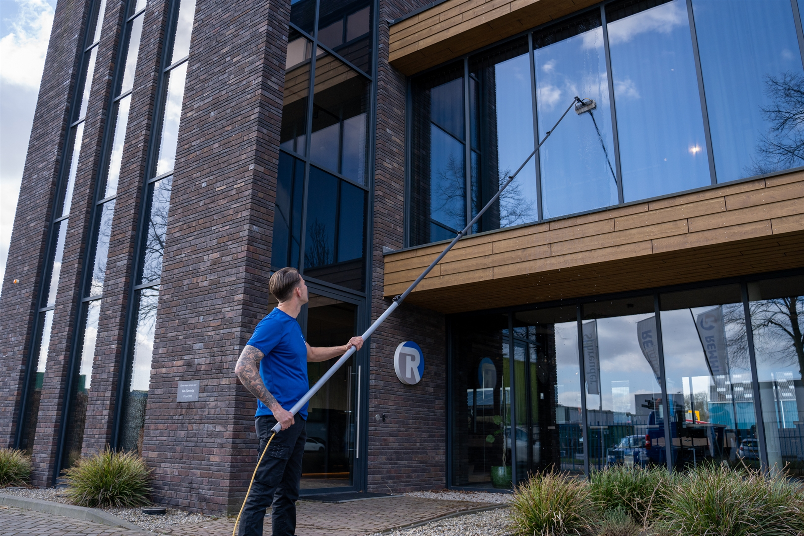
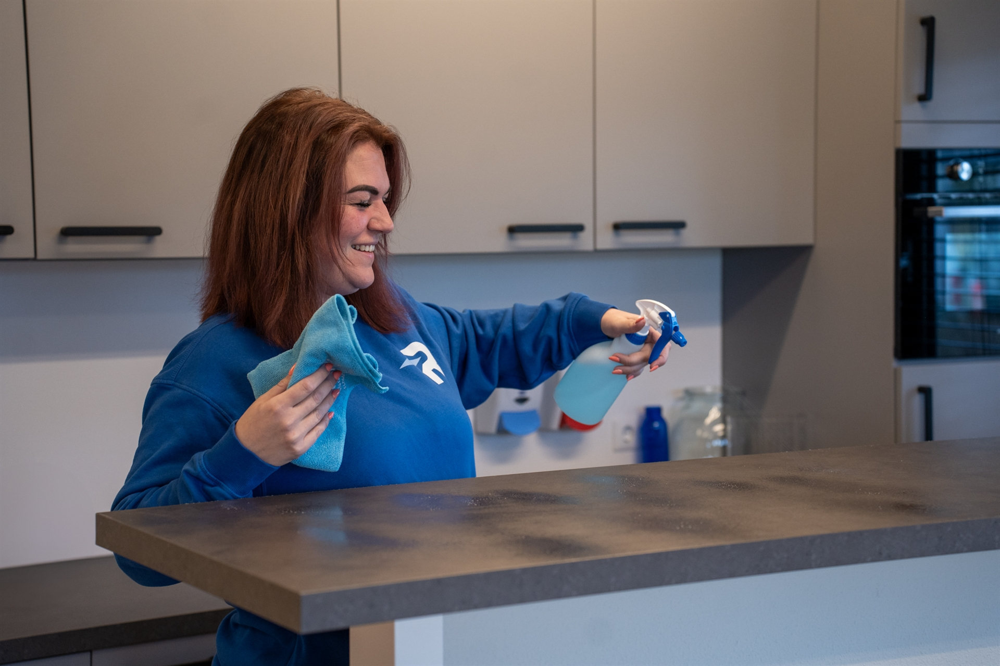
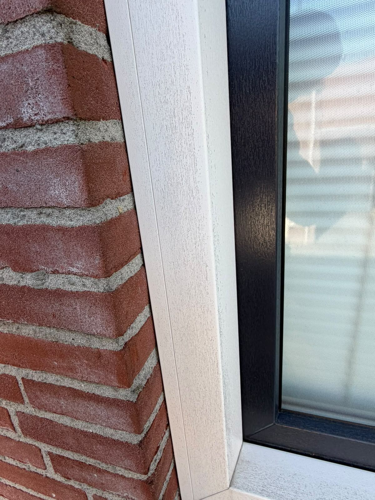
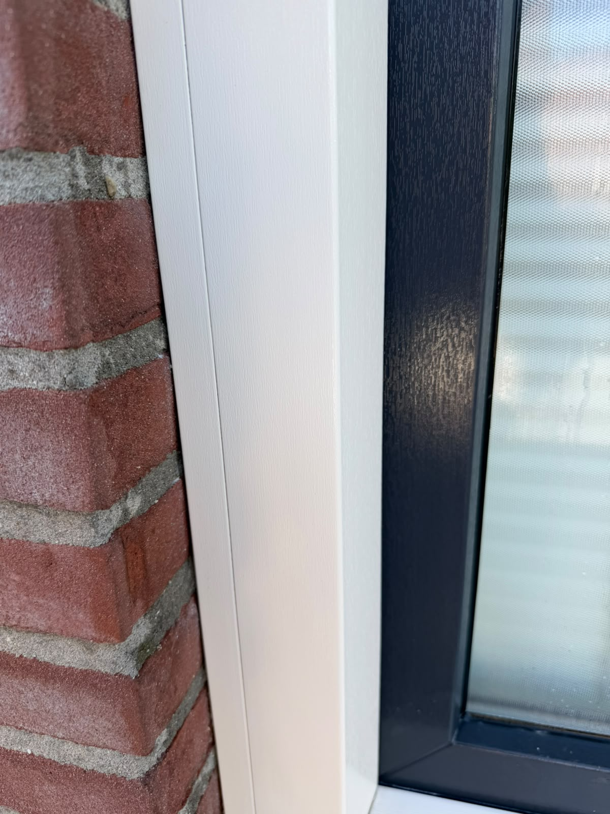
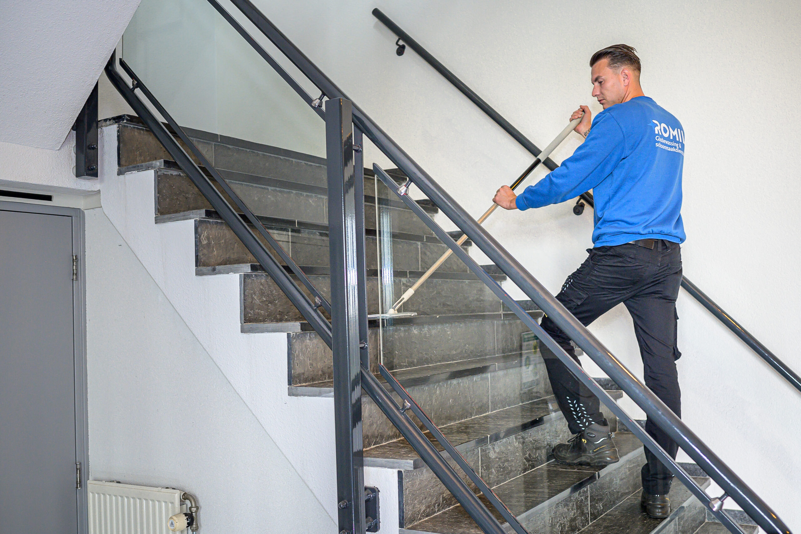
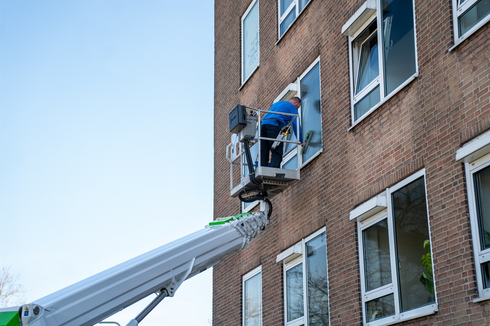
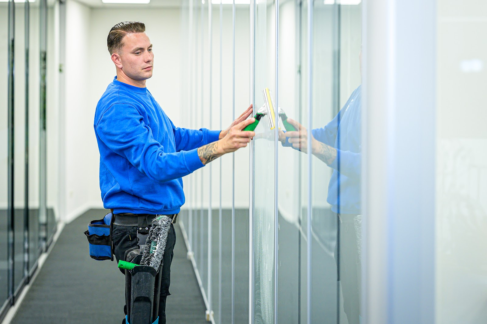
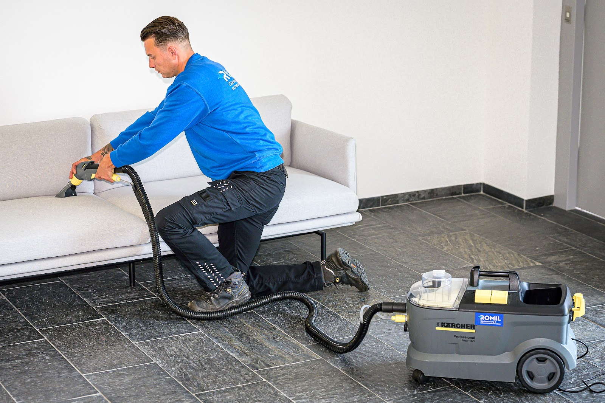
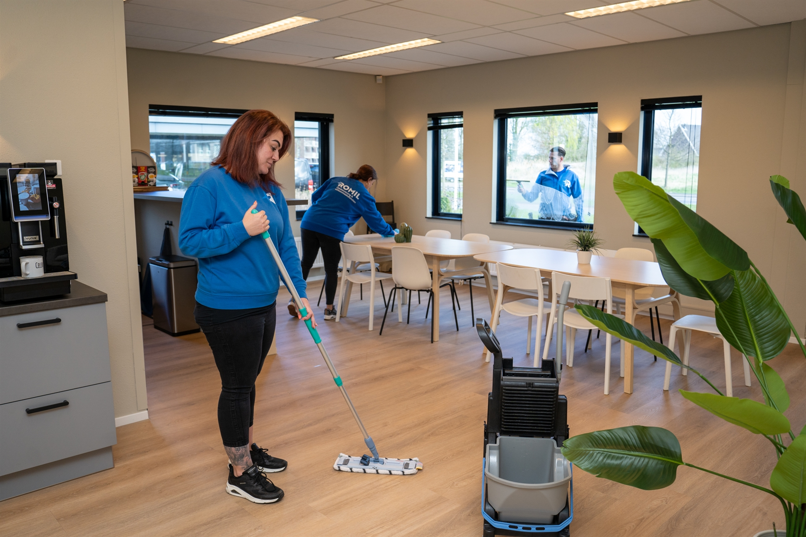

Glasbewassing
Traditioneel of met een tuckerpole, op maat en naar wens. Regelmatig gewassen glas verlengt de levensduur van ramen en kozijnen: vuil slijt er niet in, dus reinigen kan zonder agressieve middelen.
Glasbewassing en schoonmaak voor bedrijven, VvE's en particulieren in Nijmegen en omgeving. Wij nemen het schoonmaakwerk volledig uit handen en komen onze afspraken na.
Maandag t/m vrijdag bereikbaar van 08:00 tot 17:00

5 sterren uit 13 reviews op Google
"Netjes en punctueel en zeer flexibel." Schilleman Pallets B.V.
Dagelijkse en periodieke schoonmaak in bedrijven, instellingen en wooncomplexen. Wekelijks, maandelijks of één keer: we stemmen het af op uw pand en uw planning.

Traditioneel of met een tuckerpole, op maat en naar wens. Regelmatig gewassen glas verlengt de levensduur van ramen en kozijnen: vuil slijt er niet in, dus reinigen kan zonder agressieve middelen.
Dagelijks schone kantoren en gebouwen, zodat medewerkers en gasten zich prettig voelen. Per branche een aanpak op maat.
Tegels inclusief voegen, pvc, vinyl, marmoleum, linoleum en tapijt. Van dagelijks onderhoud tot periodieke behandeling, met duurzame middelen die bij uw vloer passen.
Bouwstof, lijm-, verf- en cementresten weg, ramen, sanitair en tegelwerk schoon. Uw woning, winkel of kantoor gaat brandschoon en gebruiksklaar de deur uit.
Ook voor


Kunststof kozijnen met nerf houden vuil vast in elk groefje. Een klant fotografeerde zijn kozijnen voor en na onze behandeling.
"Romil Schoonmaakbedrijf levert prima werk! Roberto komt zijn afspraken na, is vriendelijk en correct."
Herkenbaar aan het blauw. Met vaste contactpersonen, zodat u weet wie er komt.





Wij denken mee, komen onze afspraken na en zorgen dat u geen omkijken hebt naar de hygiëne op locatie. Of u nu een klein kantoor hebt of een groot complex beheert.
5 sterren uit 13 reviews op Google
"Opnieuw zijn wij zeer tevreden over de professie van Romil Schoonmaakbedrijf. Roberto en zijn werknemers leveren nog vakwerk zoals dat vroeger was, alles naar wens en volgens afspraak. Als kritische reviewer kan ik dit bedrijf zondermeer adviseren. Doe je voordeel met deze review 👍🏼"
"We zijn ontzettend tevreden over de diensten van Romil, ze maken bij ons bedrijfspand alles schoon en reinigen ook 2x per jaar het gehele bedrijfspand zowel binnen in de productie als de gevelbeplating. Ook wassen ze maandelijks de ramen de service is heel goed en ze zijn netjes en punctueel en zeer flexibel."
"We zijn ontzettend tevreden over de service en raden hem zeker aan, aan iedereen die op zoek is naar een professionele en zorgvuldige glazenwasser die altijd zijn afspraken na komt."
"Romil is een professioneel en betrouwbaar bedrijf welke uitstekende schoonmaak levert. Ze denken graag met je mee en de communicatie lijnen zijn kort. Ik zou Romil zeer zeker aanbevelen."
"Romil Schoonmaakbedrijf levert prima werk! Roberto komt zijn afspraken na, is vriendelijk en correct. Bijgaand foto's van het reinigen van onze kunststof kozijnen (met nerf). Foto's van 'voor' en 'na' de behandeling. 👍🏻"
Bel ons, mail of laat uw gegevens achter. We nemen zo snel mogelijk contact met u op.
024 234 0302 info@schoonmaakbedrijfromil.nlAdres
Oude Boterdijk 1c
6582 AS Heumen
Openingstijden
Maandag t/m vrijdag
08:00 tot 17:00
Zaterdag en zondag gesloten